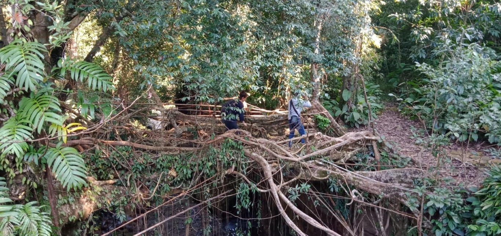

“El mundo del estar no supone una superación de la realidad sino una conjuración de la misma… El mundo del ser, o sea, el occidental, aparentemente ha resuelto el problema de la hostilidad del mundo mediante la teoría y la técnica.” Rodolfo Kusch, América Profunda.
Cuando Kusch habla del estar se refiere al mundo indígena, el hombre estático que observa y hace reverencia a la naturaleza, en contraste con el mundo del ser, el hombre moderno, que es dinámico y busca la individualidad usando la ciencia y la teoría para superar y enajenar a la diosa, la madre tierra.
Pero hoy sabemos que “superar” a la naturaleza no es más que una distopía, no sólo imposible sino indeseable. Tenemos por delante un futuro incierto enfrentando cambios climáticos que no se pueden predecir, especies en extinción y fallas en los ecosistemas donde el sesenta por ciento de la biodiversidad del planeta desapareció en cuarenta años.
En consecuencia, el campo del diseño, que actualmente se encuentra en la intersección entre la antropología, ecología e innovación, está en un momento pivotante, expandiéndose para enfrentar problemas complejos que requieren robustas respuestas.
Para lograrlo hay que romper los viejos paradigmas del hombre moderno. Izaskun Chinchilla, arquitecta española, analiza el término paradigma del filósofo Thomas Kuhn y lo extrapola al mundo del diseñador. En su análisis explica cómo los diseñadores nos hemos alejado de la naturaleza y estamos en cierta forma controlados por universidades e instituciones, quienes nos han dado “las soluciones”.
En consecuencia, nos limitamos a recombinar una hipótesis intentando encajar los problemas de diseño dentro de una misma receta con los mismos ingredientes. Pero perder el contacto con la naturaleza significa no reconocer la solución que subyace en el problema.La arquitectura tiene consecuencias inmediatas e implicaciones duraderas. El verdadero origen del término sustentabilidad viene de las tribus nativas Iroquois de Norte América y su Principio de la séptima generación que consiste en considerar cómo las acciones afectarán a la séptima generación después de ellos.
Al observar e interactuar con lo natural de cada lugar, los pueblos indígenas logran conectar al individuo con el ecosistema diseñando una relación simbiótica. La simbiosis es el famoso “ganar ganar”; la manera en que el individuo puede formar parte de la naturaleza y garantizar la supervivencia de ambos.
Uno de los ejemplos más innovadores de infraestructura indigena son los puentes de raíces vivientes de la tribu Khasis en Meghalay en el norte de India. Es un lugar que tiene fuertes monzones y las precipitaciones suben a niveles altos que cortan las rutas entre aldeas. Los Khasi han tomado en consideración el crecimiento biológico y desarrollo del ficus elástica, árbol que para ellos es una especie sagrada de gran importancia, y han “guiado” sus raíces en forma de tejido para construir puentes que pueden resistir hasta cincuenta personas. Hay que destacar que el desarrollo de las raíces es debido a las fuertes lluvias, es así como una inundación destructiva se transforma en un diseño innovador; el problema es la solución.
Este y muchos ejemplos los encontramos en el libro de Julia Watson, Design by radical indigenism, que funciona a modo de catálogo de soluciones innovadoras en distintos ecosistemas del planeta.
Escalar estas tecnologías dentro de grandes ciudades podría ofrecer un camino para reducir exponencialmente la huella ecológica del ser humano y mitigar el colapso pronosticado. Concebir lo primitivo como innovador puede catalizar un cambio global dando resultados icónicos, originales y muy sofisticados que funcionan dentro de complejos ecosistemas.
Es por lo tanto la tarea del diseñador seguir a la gran influencer de todos los tiempos, que siempre está marcando la tendencia del lugar.